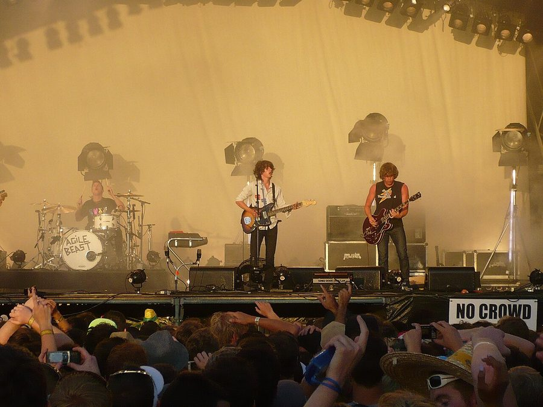

Big Day Out sideshow bonanza! Groove Armada, Calvin Harris & Dizzee Rascal, presented by ITM


.jpg){kind=link}
The annual Big Day Out juggernaut has already sold out every last show across the country, so if you missed out on a ticket and you’re keen on catching some of the international heavies who’ll be playing at the festival, then you’ll be hanging on the announcement of sideshows. If that’s the case then you’re in luck, as the organisers have just announced a bonanza of sideshows featuring some of the biggest acts that’ll be holding sway in the Boiler Room, presented by ITM!
The biggest of the lot will be veteran live dance act Groove Armada, who’ll be bringing their live act back to the country after their slew of New Year live shows two years ago. On competent support duties will be none other than the Simian Mobile Disco DJs, who’ll promoting their new Temporary Pleasure album.
One-time collaborators Dizzee Rascal and Calvin Harris (who was in the news this week with his reality show stage invasion) will both be playing separate shows in Sydney and Melbourne, but they’ll both be on the bill together for a massive show at River Stage in Brisbane, which will also see pop tartlet Lily Allen joining in the fun along with local support Miami Horror. It should make for some pretty big mid-week shenanigans! Will we see all four of them hitting the stage together for a variety show style rendition of Dance Wiv Me? Only time will tell.
Groove Armada sideshows, presented by ITM:
Mon 25th Jan – Hordern Pavilion, Sydney
Wed 27th Jan – The Palace, Melbourne
Dizzee Rascal sideshows, presented by ITM:
Tues 19th Jan – River Stage, Brisbane (with Calvin Harris + Lily Alen)
Sun 24th Jan – Enmore Theatre, Sydney
Thur 28th Jan – The Forum, Melbourne
Calvin Harris sideshows, presented by ITM:
Tues 19th Jan – River Stage, Brisbane (with Dizzee Rascal + Lily Alen)
Thurs 21st Jan – The Metro, Sydney
Mon 25 Jan – Melbourne, Prince of Wales
Want more Big Day Out juice? Check out ITM’s Festival Page for more info on the tour.